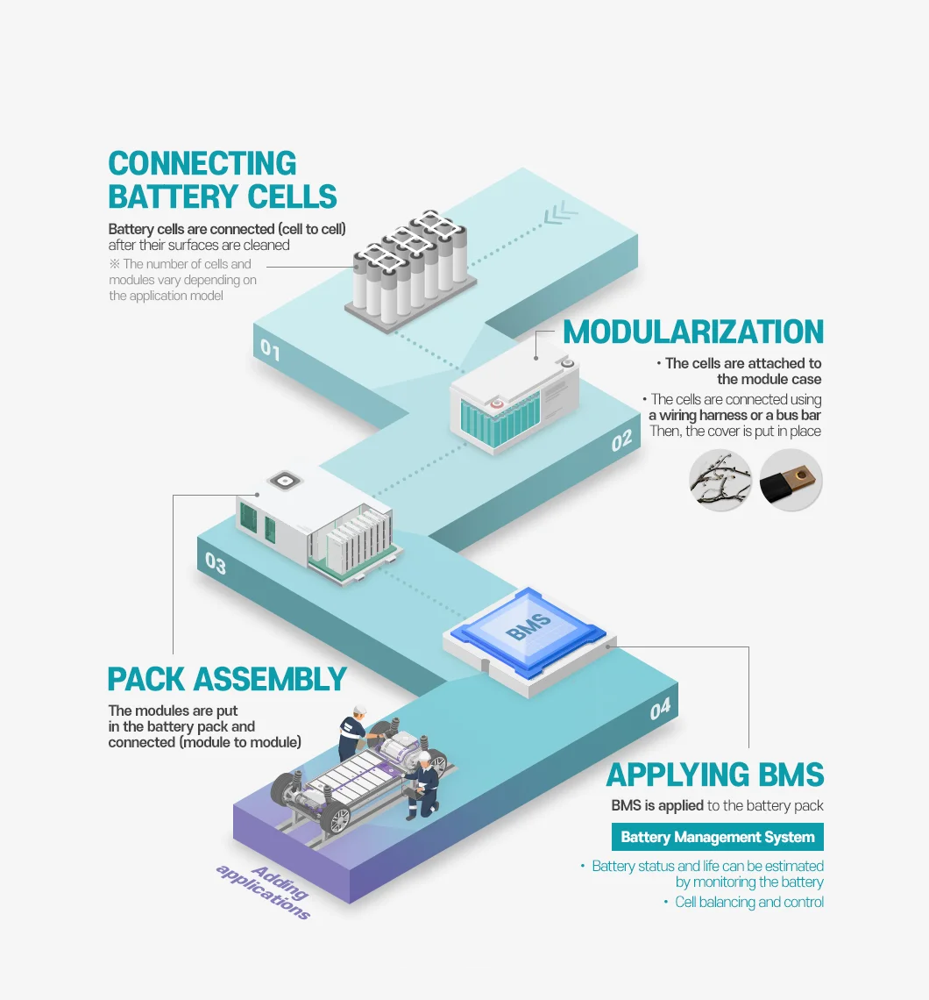

Lithium-ion battery packs, the hidden powerhouses powering our devices, aren't born overnight. Their creation is a complex dance of technology and human expertise, involving multiple crucial steps that ensure safety, stability, and reliable performance.
Let's delve into the fascinating world of lithium-ion battery pack manufacturing and explore the process flow behind these essential components.
The Foundation: Selecting the Right Team
The journey begins with a meticulous selection process, akin to picking the perfect team. Battery cells, the building blocks of the pack, undergo rigorous testing. Their capacity, internal resistance, voltage, and other vital signs are scrutinized. This ensures each cell contributes equally, laying a solid foundation for a consistent and high-performing battery pack.
Merging Muscle and Mind: Assembly and Welding
Next, we enter the heart of the process – assembly and welding. Here, advanced machines collaborate with skilled personnel. Specialized fixtures hold the cells in precise positions, while expert welders use sophisticated equipment to securely connect them. The addition of a protection circuit module (PCM) or battery management system (BMS) further enhances safety and performance. As these components are meticulously joined, the core of the battery pack begins to take shape.
Safety First: Insulation and Testing
But the journey doesn't end there. Safety is paramount. Skilled workers meticulously wrap the voltage collection lines and wires with high-quality insulating materials, preventing short circuits and ensuring safe operation. This is followed by a rigorous testing phase, where the battery pack undergoes comprehensive examinations. Charge and discharge cycles, internal resistance checks, and capacity tests are just some of the hurdles it must overcome to earn its stripes.

Dressing for Success: Packaging and Shipping
Finally, the battery pack gets its finishing touches. With a focus on both aesthetics and practicality, it's wrapped in attractive and durable packaging materials. These materials not only enhance the overall appeal but also improve portability and safeguard the battery pack during transport and use. Smart packaging design ensures a safe journey to its final destination - the customer.
The Grand Finale: Inspection and Shipment
Before embarking on its mission to power our lives, the completed battery pack undergoes a final comprehensive inspection. This ensures it meets all performance and safety standards, guaranteeing a reliable and long-lasting experience for the user. Once cleared, the packs are neatly packed in cartons or secured on wooden racks, ready to embark on their journey to power our devices.
A Symphony of Technology and Human Ingenuity
The manufacturing of lithium-ion battery packs is a testament to the power of technology and human expertise working in harmony. Every step, from selection to shipping, involves the dedication and skill of professionals. This meticulous process, with its focus on quality control and innovation, ensures we have access to safe, reliable, and powerful batteries that fuel the modern world.